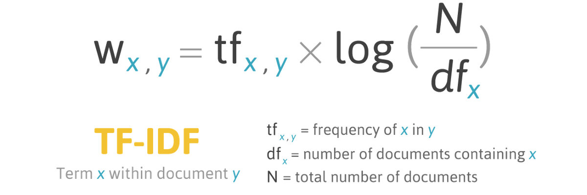

Implementation
We implemented a Bimodal Variational AutoEncoder based on the framework described by Chen & Zhou, as well as IR and RET-IR baseline models.
BVAE
Before being fed into the neural network, the inputs are first tokenized. Using subword tokenization, words that are not recognized (because they are used to infrequently for the model to have learned) can be broken up into sub words that are recognized, reducing the number of unknown tokens.
The yellow units here represent trainable elements, which will start random and be modified during training. The red units are similarly trainable, but additionally are being applied multiple times for each input, a number of times basically corresponding to the length of the reconstructed input.


RET-IR
RET-IR is the baseline model used for retrieval. The RET-IR algorithm uses TF-IDF scores to compare the similarities of two text snippets based on how many times they use each word in the vocabulary. This is called term frequency (TF). The importance of each word is inversely scaled by how many of the how many of the documents contain that word. This is called inverse document frequency (IDF).
Given a code summary, the program finds the code snippet in the database the associated summary of which is closest to the given summary.
IR
IR is the baseline model used for summarization. The IR algorithm compares two text snippets by their "edit distance." One edit is the addition, removal, or change of one character. The edit distance between two pieces of text is the minimum number of edits required to convert from one to the other. The program compares the input code with each of the summaries in its database and returns the closest.